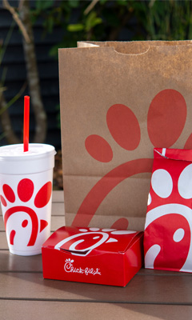

While there are so many restaurants to choose from, I am partial to Chick-fil-A as my favorite. Because I work there, I see the inner workings of the restaurant; therefore, I am able to trust the food served to be fresh, made in a timely manner, and with friendly service. As an employee, I serve guests with a positive attitude. Not only that, when I go there as a guest and I'm not “on the clock,” I am treated with the same respect other guests receive.
To see the full menu of Chick-fil-A, follow this link!
Here are a couple of my favorite menu items:
Both of these items can be paired with any of the folowing complementary sauces:
©2023 by Ariel Pinkston